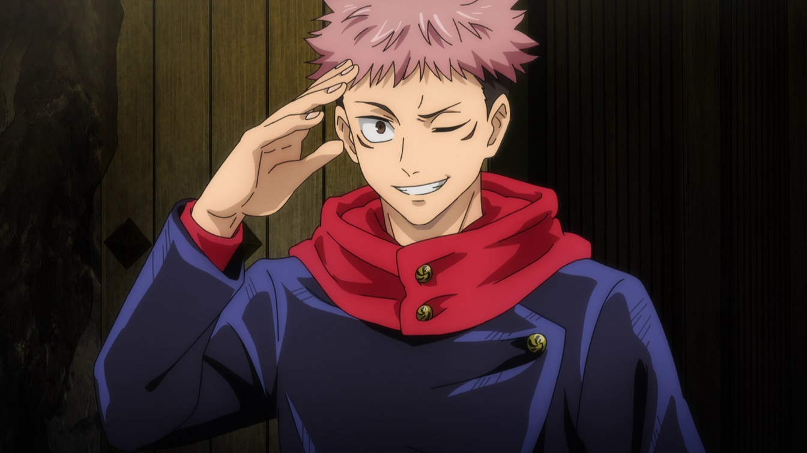
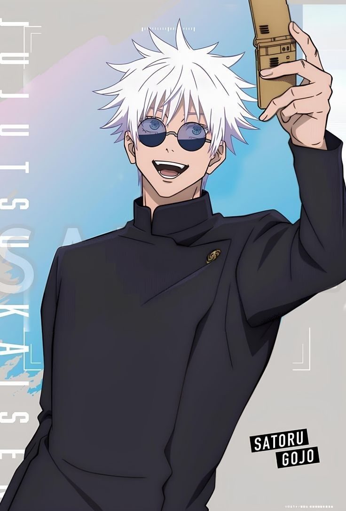
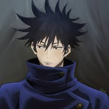
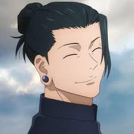

Hechiceros y Maldiciones Destacados

Yuji Itadori
El recipiente de Sukuna. Un joven de gran corazón que posee una fuerza física sobrehumana y utiliza la técnica del Puño Divergente.

Satoru Gojo
El hechicero más fuerte de la era moderna. Maestro de primer año en la escuela de Tokio, poseedor de los Seis Ojos y el Infinito.

Megumi Fushiguro
Un reservado hechicero de línea de sangre de la familia Zen'in. Utiliza la Técnica de las Diez Sombras para invocar Shikigamis desde la oscuridad.

Suguru Geto
Uno de los antagonistas principales y personajes más complejos de la serie. Manipulador de maldiciones y antiguo amigo de Gojo.

Ryomen Sukuna
Antagonista principal de la serie. Es apodado el "Rey de las Maldiciones" y es ampliamente considerado como el espíritu maldito más poderoso de la historia.